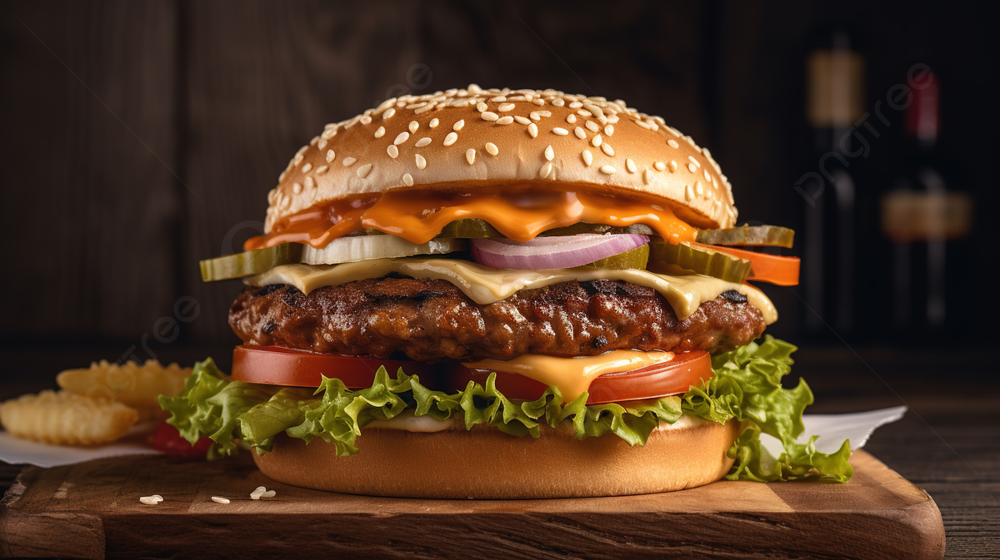

PANADERÍA GOURMET

Pan de Masa Madre
Ingredientes:
- Harina
- Agua
- Sal
- Masa madre
Proceso:
- Mezclar todos los ingredientes
- Reposo inicial (30 min)
- Pliegues cada hora (4 veces)
- Fermentación: 12 h a 20°C
- Horneado: 240°C 20 min + 200°C 25 min
Croissants Clásicos
Ingredientes:
- Harina
- Mantequilla
- Leche
- Levadura
- Azúcar
Proceso:
- Mezclar la harina, azúcar y levadura en un tazón grande.
- Añadir leche y formar una masa homogénea.
- Reposar la masa 30 minutos.
- Incorporar la mantequilla en pliegues, refrigerando entre dobleces.
- Formar los croissants y dejar fermentar hasta que doblen su tamaño.
- Hornear a 200°C durante 20 minutos o hasta dorar.
Tiempo total estimado: 4 horas
Pan de Plátano
Ingredientes:
- Plátano maduro
- Harina
- Huevos
- Mantequilla
- Azúcar
Proceso:
- Precalentar el horno a 180°C.
- Triturar los plátanos en un tazón.
- Añadir mantequilla derretida, huevos y azúcar; mezclar bien.
- Incorporar la harina hasta obtener una masa uniforme.
- Verter en un molde engrasado.
- Hornear durante 50 minutos o hasta que al insertar un palillo salga limpio.
Tiempo de horneado: 50 minutos